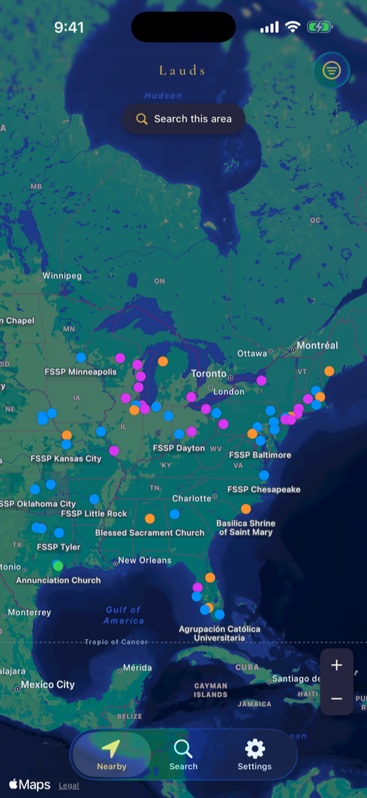
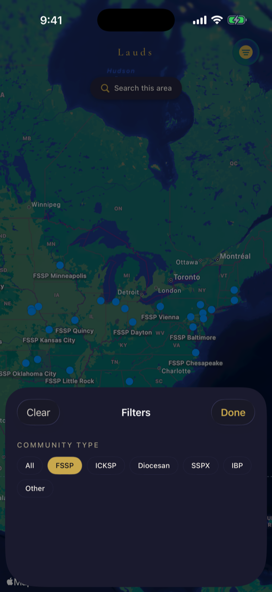
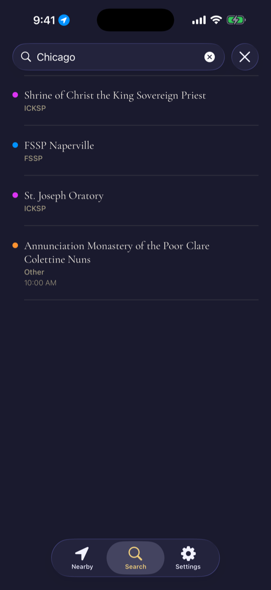

FSSP · ICKSP · Diocesan · SSPX. Everywhere you travel.



Find TLM anywhere in the world, not just near home.
FSSP, ICKSP, diocesan, and SSPX. Clearly distinguished.
Community-verified schedules. Flag stale data in one tap.
"Finally an app built for us, not just a filtered version of everything else."
App Store review